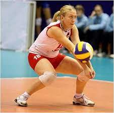
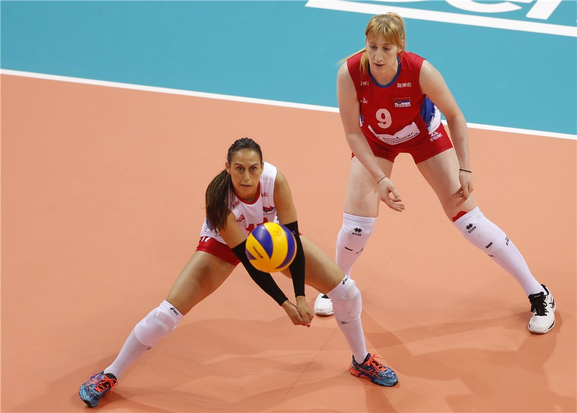
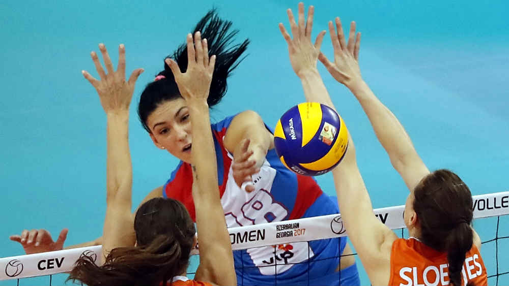
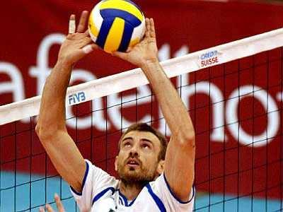

Примач:Приликом избора ове играчке улоге важно је утврдити статус способности и карактеристика битних за успјешност наведеног играча:
1. способност одличног вида
2. могућност максималног спајања подлактица приликом подлактичног одбијања (морфолошка карактеристика).
Ако су наведени захтеви испуњени, овај играч има почетне предуслове да буде успешан и прецизан код пријема разноврсних сервиса након којих се у фази напада отварају могућности постигнућа највећег броја бодова (10 до 11 од укупних 25 бодова у једном сету).

Либеро: Либера је лако препознати на терену јер носи различиту боју дреса од својих саиграча и увек се налази у задњем делу терена где може заменити било ког играча. Либеро не сме сервирати, смечевати нити се ротирати са играчима на првој линији терена, али игра врло важну улогу у пријему противничког сервиса и одбрани поља. Либеро је уведен да би уз помоћ боље одбране поља поени дуже трајали и да би се дала прилика и нижим играчима који у данашње време немају велике шансе успети као нападачи или као играчи прве линије.

Коректор: Овај играч не учествује у пријему сервиса већ у тој фази игре учествује у нападу из прве и друге линије (када је дизач у првој линији), што му је и примаран задатак. Обично то ради са краја, са десне стране терена гледајући ка мрежи, из „Зоне 1“ (друга линија) и „Зоне 2“ (прва линија), осим када се дизач налази у „Зони 1“ у фази пријема сервиса, па коректор напада са супротне стране из „Зоне 4“ (прва линија), тј. са леве стране терена.
У фази одбране се налази такође са десне стране терена, у блоку у „Зони 2“ и у одбрани поља у „Зони 1“.
Коректор је најмоћнији нападач тима, па зато и добија убедљиво највећи број лопти у нападу. Прави је атлета па су у складу са тим његова конституција и психо-физичке и моторичке могућности како би могао да издржи читав меч са уједначеним ритмом и интензитетом.

Дизач: Дизачи су често и капитени екипе и они ће најбоље применити тактичке замисли тренера на терену.
Дизач учествује у свим акцијама напада и његова улога у организацији је кључна за успех у игри.
Тренери стављају посебан акценат на тај аспект, на тацтику дизања, јер је она клучна за успех екипе.Место које заузима дизач налази се удаљено од мреже 1м и око 3м са леве и десне стране терена од бочних линија.
Дизач својим утрчавањем на мрежу не сме ометати пријем сервиса.
Дизач се из зоне за дизање не треба брзо кретати, док претходно не одреди путању и смер лета лопте.
Мора да прати акције својих и противничких играча.
Мора бити што прецизнији приликом дизања лопте.
Треба да зна распоред и квалитет противничких блокера.
Који од смечера се налази у најбољој позицији за смеч.

Елементи технике
Сервис: То је почетни ударац којиме почиње сваки поен, изводи се на почетку сета и послије сваке погрешке. Играч мора ударити лопту тако да лопта пријеђе мрежу и погоди унутар терена противника. Постоје двије врсте сервиса - горњи и доњи, али данас у врхунској одбојци више нитко не сервира доњи сервис. Најпопуларнији сервис је сервис у скоку који може бити изнимно тежак за пријем ако има велику брзину и ротацију.
Пријем: Руке се спајају у тзв. чекић, подлактице су паралелне и унутарњи дио подлактица је окренут према горе. Овај начин одбијања се користи за први додир с лоптом код пријема сервиса и за ефикасну обрану поља код смечирања противничких нападача.
Смеч: Ово је најефикаснији и најатрактивнији облик упућивања лопте у поље противника, а тиме и постизања поена. Лопта дигнута изнад разине мреже хвата се у скоку у највишој могућој точки и што већом брзином и што стрмије упућује у противничко поље. Јако га је тешко зауставити поготово ако је брз,но најчешће се зауставља чекићем.
Блок: Блок је прва линија обране у одбојци и најефикаснија обрана од смеча. За блокирање су задужена три играча која се налазе на мрежи. Они могу поставити блок тако да прате противничког техничара и његово дизање, па се равнају по њему или да пре саме акције противника одлуче да ли ће покушати блокирати брзи напад са средине мреже. Главни циљ доброг блока је прелазак рукама на другу страну мреже у тренутку скока, јер ако руке блокера стоје равно на блоку добар смечер ће то знати искористити тако да ће блокер на крају изблокирати смеч, али на своју страну, најчешће сам себи под ноге.